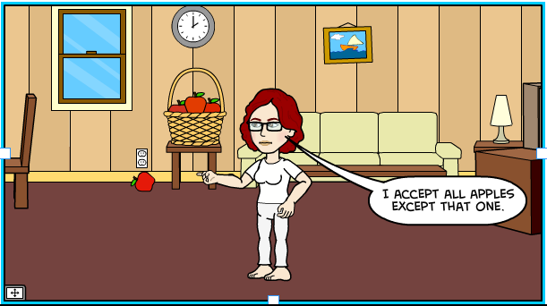
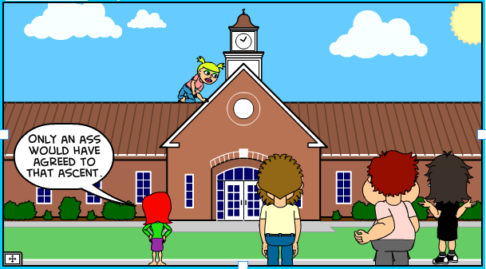
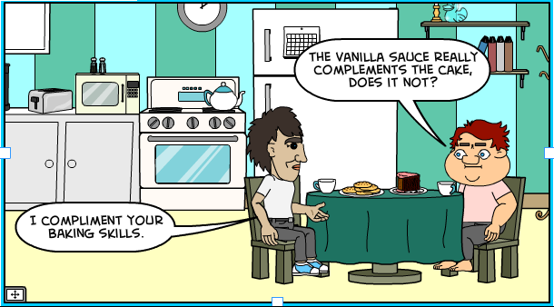
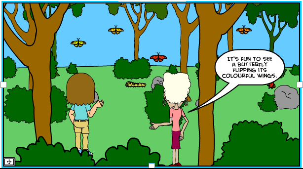
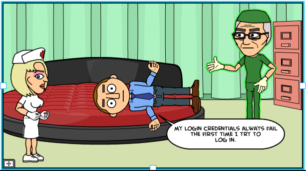
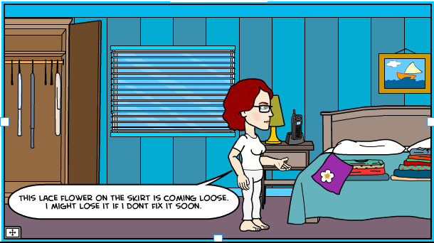
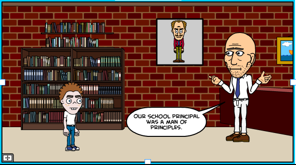
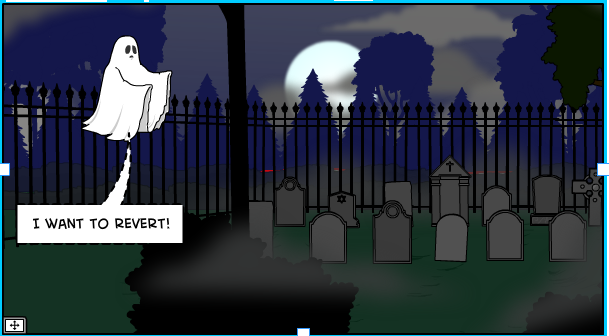

Commonly confused words
Anagha Chandratrey
Can I ask you a question? You can but you may not. Avoid these common vocab mistakes. 
To read more about a word pair, move the cursor over the box.
Listen to this article being read out by ....accept - except
accept: to agree to receive or do
except: not including
To accept is to agree. The word except excludes something from a list.
To accept is to agree. The word except excludes something from a list.

affect - effect
affect: to change or make a difference to
effect: a result; to bring about a result
assent - ascent
assent: the action of rising or climbing up
ascent: agreement, approval
To assent is to agree. Remember that only a donkey (ass) agrees with everyone and everything!
Remember, only a donkey (ass) agrees with everyone and everything!

complement - compliment
complement: to add to so as to improve
compliment: to praise or express approval
Complements are for objects. Vanilla sauce complements chocolate cake.
Compliments are for people. I complimented her baking skills.
Complements are for objects. Compliments are for people.

discreet - discrete
discreet: careful not to attract attention
discrete: separate and distinct
Remember the two Es are separated by the T in discrete, which means separate and distinct.
doubt - question
doubt: to be suspicious about
question: to ask a question
You are talking to a product manager about the new product, and you don't understand something. You want to request more information related to a specific command.
You say: Excuse me, I have a doubt.
What he hears: you are suspicious.
What you should have said: Excuse me, I have a question.
Excuse me, I have a question.
it's - its
it's: contracted form of 'it is'
its: possessive form of 'it'
Read a sentence using 'it is' in place of 'its'. If the sentence makes sense use the apostrophe. If it doesn't, drop the apostrophe.

log in - login and set up - setup
log in: a verb followed by a preposition
login: a noun, and sometimes an adjective
set up: a verb followed by a preposition
setup: a noun, and sometimes an adjective
Verbs are actions. Use log in to indicate an action (I want to log in and check for updates).
Uses of login: IT has not activated my login yet (noun) or I have created a login page for our website (adjective).
Verbs are actions. Use log in to indicate an action.

loose - lose
loose: the opposite of tight
lose: the opposite of find
Loose and tight both have 5 letters.
Lose and find both have 4 letters.
Loose and tight both have 5 letters. Lose and find both have 4 letters.

principal - principle
principal: most important; the head of a school
principle: a fundamental rule or belief
A princi-pal is your most important buddy in school.
A princi-pal is your most important buddy in school.

precede - proceed
precede: to come before something else
proceed: to go forward
3 Es in one word is unprecedented!
deploy - install
deploy: to come into a position ready for use
install: to establish in an office, position, or place
In a software context, to make something ready to use is deploy.
Use install in situations which require some amount of configuration.
adaptive - responsive
adaptive: In terms of web design, adaptive designs use multiple predefined templates to customize the appearance of a website. Each template corresponds to a different screen size or device.
responsive: In terms of web design, responsive designs use a fluid template that simply adjusts the elements on the screen to fit on any screen size.
respond - revert
respond: to reply to a communication - verbal or written.
revert: to reset something to a previous configuration. Example: roll back to a previous version.
Respond = reply. Revert = reset.

migrate - upgrade
migrate: to 'move' from one system or software to another
upgrade: to add functionality to or improve an existing system or software
A migration might automatically upgrade your situation, but not necessarily. For example if you move your photos from Yahoo's servers to Google's servers, you migrated from one system to another. But you didn't necessarily upgrade. But if you moved from a free service that simply hosts your photos to a paid service that allows you to share photos, and print and frame them, then the migration is also an upgrade. If you are moving to a newer version, then it's an upgrade."
Related
Rohit Nair tells you what it feels like to be a technical editor: A day in the life of a technical editor.
Acknowledgements
The cartoons were created by using the resources at https://www.bitstrips.com/create/comic/.